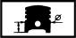

ENGINE PISTON
- Path
- Technical Data > Manufacturing data > 10 ENGINE > 1028 PISTONS AND CONNECTING RODS > ENGINE PISTON
- Kind
- technical data / specifications
- Applies to
- all engines; all production periods
- Interactive page
- https://sloeber94.github.io/elrnDB-lYpsln/en/#/2427753
Applies to: all engines; all production periods
Clearance between piston - cylinder liner/bore (mm) | Validity | |||
|---|---|---|---|---|
0.030 ÷ 0.050 | 1.2 16v 1.2 8v 1.4 16v | |||
Outer diameter (mm) | Validity |  | ||
Category B | Category C | Class A | ||
70.770 - 70.780 | 70.780 - 70.790 | 70.760 - 70.770 | 1.2 16v | |
from lower edge of piston skirt (mm) 6 | ||||
Outer diameter (mm) | Validity | |||
Category B | Category C | Class A | ||
71.970 ÷ 71.980 | 71.980 ÷ 71.990 | 71.960 ÷ 71.970 | 1.4 16v | |
from lower edge of piston skirt (mm) 6 | ||||
Outer diameter (mm) | Validity | |||
Category B | Category C | Classe A | ||
70.770 ÷ 70.780 | 70.780 ÷ 70.790 | 70.760 ÷ 70.770 | 1.2 8v | |
from lower edge of piston skirt (mm) 8.5 | ||||
Applies to: all engines; all production periods
Gudgeon pin housing diameter (mm) | Validity | |||
|---|---|---|---|---|
17.939 ÷ 17.956 | 1.4 16v | |||
Gudgeon pin housing diameter (mm) | Validity | |||
17.982 ÷ 17.986 | 1.2 16v 1.2 8v | |||